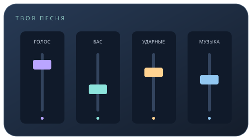

Погода
Загружаем погоду…
Твой первый понятный микс
Голос, бас и инструменты должны слышаться вместе. Разберём по шагам, как этого добиться.
Начать с основ →
Загружаем погоду…
Официальные курсы Банка России за 1 единицу валюты.
Учимся на слух
Практика
Рассчитай время эха, сравни громкость и составь план работы.